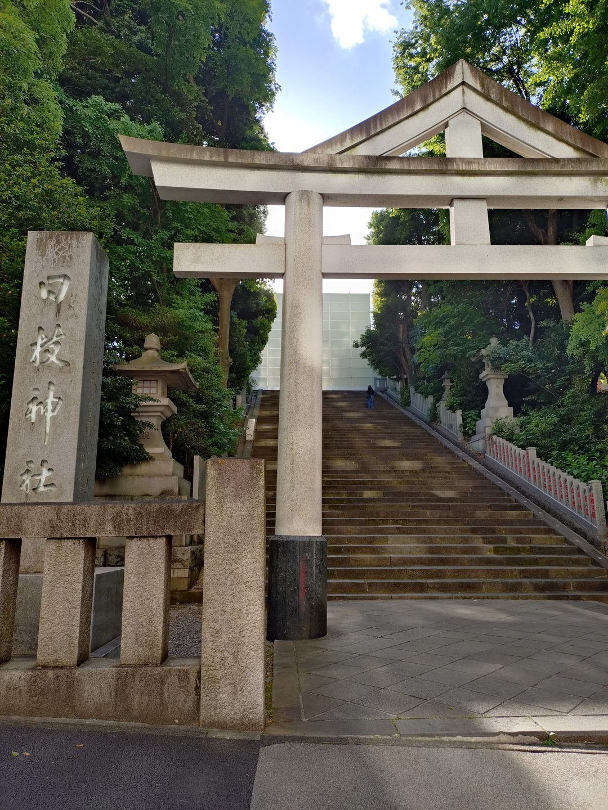
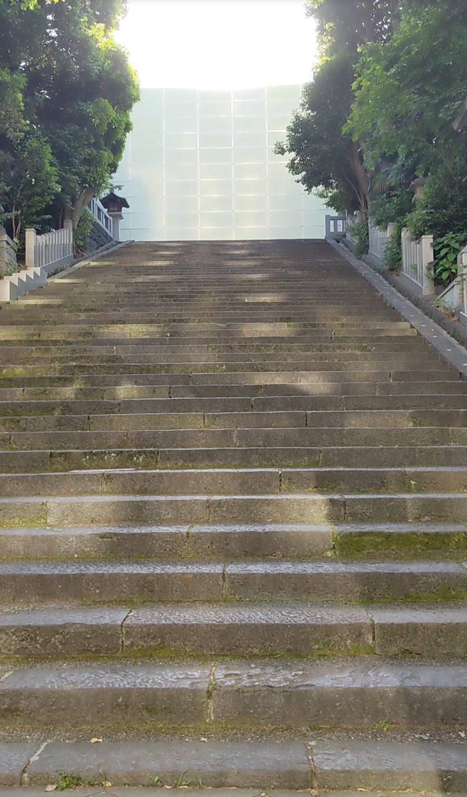
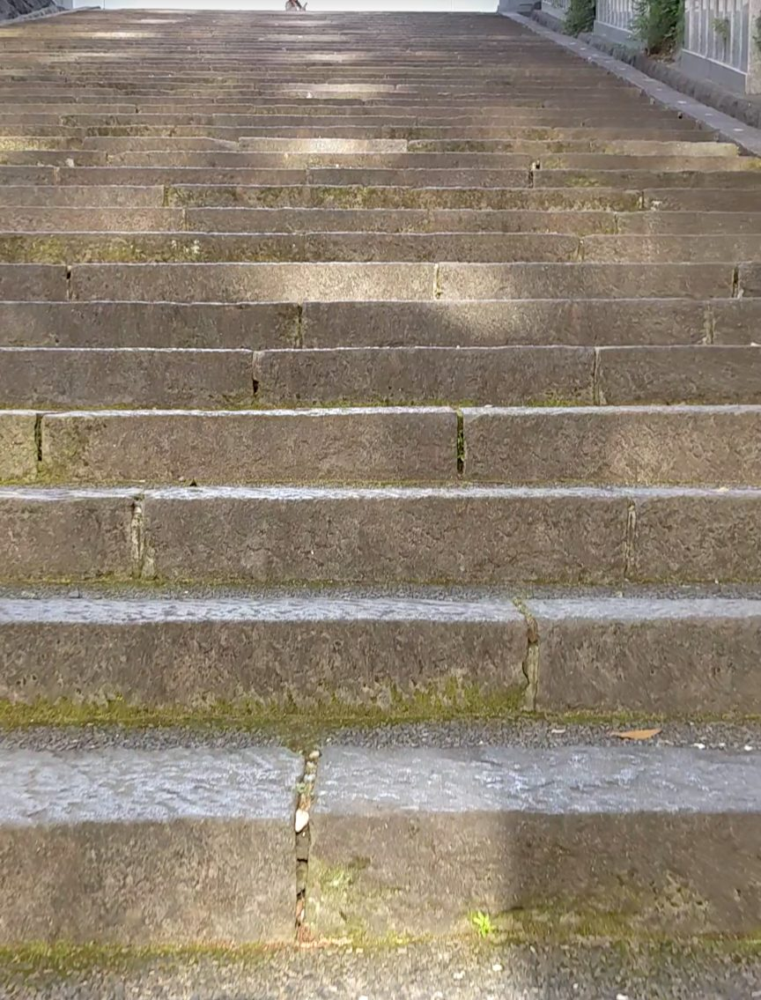
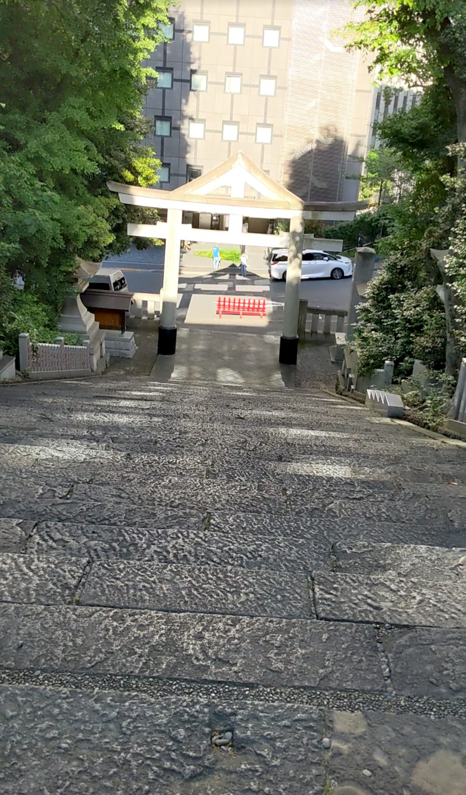

日枝神社には、巨大な鳥居とエスカレーターが印象的なその1、赤い幟が連なるその2に続いて、3つ目の石段があります。東京メトロ銀座線の赤坂見附駅から徒歩約10分。52段と段数は少なめですが、少し古びた鳥居と若干苔むした石段が醸し出す雰囲気は、その1の近代的な印象とはまったく対照的で、歴史ある荘厳さが漂う石段です。
東京メトロ銀座線・南北線「溜池山王駅」または銀座線・丸ノ内線「赤坂見附駅」下車、徒歩約10分。日枝神社の敷地内にあります。その1・その2とあわせて3つの石段をめぐるのがおすすめです。
石段は苔むしている箇所があり、雨上がりは特に滑りやすくなります。グリップのある靴で訪れてください。一段一段の奥行きが広いので、足元をしっかり確認しながら登りましょう。
その1の近代的な大鳥居と対照的に、こちらの鳥居は少し古びていて、石段には若干の苔が見られます。しかしそれが汚れているという印象ではなく、長い年月をここで人を迎えてきたという歴史の重みを感じさせます。石段はしっかりとした造りで幅が広く、堂々とした佇まいです。

石段の両脇には木々が広がっています。主張しすぎず、それでいてしっかりと存在感があり、葉が風にそよそよと揺れています。広い石段と、控えめな木々と、古びた鳥居が組み合わさって、静かで落ち着いた参道の雰囲気をつくり出しています。

登り始めると、一段一段の高さと奥行きの広さをすぐに感じます。段差が高いうえに踏み面の奥行きも広いため、普通の歩幅では届かず、自然と大股になります。その分、一段登るごとの達成感があり、登るリズムが独特です。52段と段数は少ないですが、体感としてはずっしりとした重みがあります。

頂上から石段を見下ろすと、真っすぐ下へ続く幅広の石段が一望できます。段数は多くないのに、この直線的な眺めには力があります。「これから神聖な場所へ向かうのだな」という気持ちを自然と引き出してくれる、そんな石段でした。日枝神社を訪れる際は、その1・その2・その3と3つの石段をすべて歩いて、それぞれの違いを感じてみてください。
